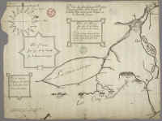
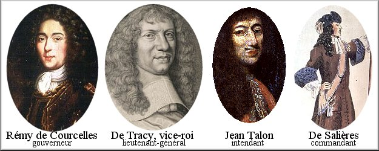
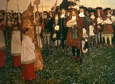
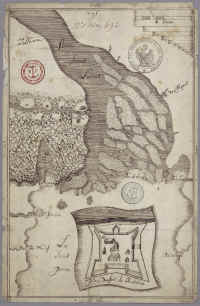

|
|
|
|
|
The
Carignan-Salières Regiment
In the early 1660s the
Iroquois were waging a guerrilla war against the French and their allies.
Tension
was at its height, especially in Montreal, where the inhabitants did not
leave the fortified town without their muskets. King Louis XIV sent his
troops. On November 19, 1663, Louis XIV appointed Alexandre de Prouville de Tracy
"lieutenant general throughout all the lands under our
obedience situated in South and
North America". The soldier's mission was twofold:
to drive the Dutch out of the West Indies and, in Canada, to carry the war
into the very homes of the Iroquois so as to wipe them out entirely. The regiment belonged to the
Italian Prince De Carignan and was commanded by the Marquis De
Salières. It had fought against the Turks and was
used to European-style warfare in ranks. Its weapons were
the most modern; it used flintlock muskets. On April 19, 1665, four
companies left La Rochelle aboard the Vieux Siméon. They
crossed paths with the Brézé near Île Percée in
the Gaspé, carrying
Tracy, who had
left Guadeloupe on April 25. The Vieux Siméon reached Quebec on
June 19. The townspeople were happy to see these
men arrive, who, it was hoped, would bring back peace and prosperity.
The Brézé dropped anchor at Tadoussac because, given her
heavy tonnage, the captain was afraid to take her up the river
as far as Quebec. The soldiers made the trip aboard two
small vessels. On June 30, 1665, the king's representative was
welcomed with a splendour the colony was not used to. The port of La Rochelle, capital of Aunis, France. Meanwhile, eight more
companies were sailing across the Atlantic, having left La Rochelle on May 13
aboard two ships. The first reached Quebec on August 19,
and the second the next day. At the end of May, the last eight
companies left France. Aboard the Saint-Sébastien
travelled Rémy de Courcelles, who was coming to take up the post of
governor of New France, and Jean Talon, the new
intendant. The crossing lasted 117 days and ended in
near disaster. As they approached land, the travellers
"opened the gunports of their ships too soon, so that
the air having come in too soon, sickness set in, which
caused much desolation". Eight soldiers died and about a
hundred others had to be carried to the Hôtel-Dieu. So
many sick caused problems for the nuns; Marie
de l'Incarnation wrote: " The hospital ward being full,
some had to be put in the church, which being filled up to the
altar rails, we had to turn to the neighbouring houses,..."
THE
RICHELIEU FORTS Governor Rémy de
Courcelles wanted to give battle
at once. But the Marquis de Tracy, in
charge of military operations, chose another strategy: to stop the Iroquois from reaching the
St. Lawrence River, and so the towns of Montreal, Trois-Rivières and
Quebec, by blocking their access to the Richelieu
valley. Captain Jacques de Chambly
was put in charge of building the first fort. On July 23, 1665, he
left Quebec with four companies (about 200 men) and settled
on the left bank of the Richelieu, at the foot of the rapids. First a
wide enough area was cleared so that the enemy could not hide
nearby, then the stake palisade was raised, enclosing wooden
buildings, a house and huts for the soldiers. Everything was finished
on the feast of Saint-Louis (Saint Louis), hence the name of this fort, which
was also called Richelieu. A month later, on August 23,
Captain de Saurel went to build a second fort. The Marquis de Tracy
ordered him to build it at the mouth of the river, on
the site of the old Fort Richelieu, burned by the Iroquois in
1647. Once the fort was finished, it was named Saurel in honour
of its commander.  In the autumn Tracy divided the companies among the various
posts of the colony: eight in Quebec, five in Montreal, three in
Trois-Rivières, one at Sainte-Famille on Île d'Orléans, two at
Fort Richelieu, two at Fort Saint-Louis and the last three at Fort
Sainte-Thérèse. For lack of barracks, the soldiers lodged with
the settlers, who had to provide for some of their needs; for
example, in August an ordinance required the inhabitants of Quebec
to supply, over the winter, 800 cords of wood to the soldiers who
would winter there. TWO EXPEDITIONS TO THE
IROQUOIS COUNTRY
There was no agreement among the men running
the colony: the new governor Courcelles, the viceroy Tracy,
whose title outranked the governor's, the new intendant Talon
and the regiment's commander, the Marquis De Salières.
 These
four men had just arrived in the country
in 1665 and did not
know it. The governor was a little king who decided when
to make war without taking advice. De Tracy was the general in
chief; having arrived from the West Indies with 4 companies of soldiers and his personal guard,
he was a great
figure in the France of that time. Intendant Talon was often ill,
and as for De Salières, he was an
irascible man, a stickler for principle who, over a misplaced word, might
provoke a duel.  Bishop
Laval, Talon, Tracy The presence of 1,200 soldiers caused some concern among the
Iroquois. On November 19, 1665, fourteen
canoes arrived in Montreal with twelve ambassadors from three Iroquois nations* (the
Onondagas, Senecas and Cayugas), led by
Garakontié, who wanted to negotiate peace with the French.
Monsieur de Salières put on a great show to
welcome them: "I had them very well received, having put
the five companies under arms and had a volley fired and the
cannon shot. They were taken into the château, where I gave them
peas, tobacco, bread and other things one gives the Savages, and
often gave them food, and did not spare them my wine and my
tobacco, giving it to them in such a way that it did them no harm". Twelve soldiers went with the twelve Iroquois ambassadors to Quebec,
where they met Tracy in December. He promised
Garakontié "peace and the king's protection for his nation; he
even gave him hope of the same favour for the other Iroquois
nations, if they would rather come to their duty of their own accord
than be compelled to it by force of arms....
However, adds Father François Le Mercier in the Relation of
1665-1666, since no advantage can be expected from these
nations except insofar as one appears able to harm them,
preparations were made for a military expedition against those with whom
no peace had been concluded." FIRST
EXPEDITION, WINTER 1666 On January 15 the expeditionary force reached
Cap-de-la-Madeleine, and the next day Trois-Rivières. The soldiers
were worn out, while the local settlers had lost none of their
fitness. The expedition went on; Fort Saint-Louis was repaired, the sick
soldiers were replaced, and the force was filled out with Montrealers
led by Charles Lemoine. On January 30, soldiers and Canadiens left Fort Sainte-Thérèse
without waiting any longer for the Algonquins who were to guide them
to the Agnier (Mohawk) villages. Courcelles, impatient to
march against his enemies, had not seen fit to wait any
longer, despite Salières's disagreement. The march grew
harder and harder. They got lost and retraced their steps.
Finally, on February 14, instead of arriving near an Agnier village,
the French found themselves at Corlaer (Schenectady), a Dutch
settlement. A few days earlier, in a skirmish with
a small group of Iroquois, an officer and ten men had been
killed. The Dutch commander told Courcelles that most
of the Iroquois warriors from the nearby villages had already
gone off to war against tribes called the "porcelain
makers". The governor then decided to
return to Quebec. The leaders of Albany were surprised
to learn that a French army was roaming their territory
without the permission of the governor of New York. What none of them
knew was that they were enemies, France and England having been at
war since January 26, 1666. Painfully, the soldiers headed back, after
attacking an Agnier cabin, killing two men and an old
woman. On Sunday, February 21, the Algonquins arrived with
supplies of fresh meat. The way back was as hard as
the way out. The Iroquois, seeing what was happening, decided
to attack the army as it retreated. They had
snowshoes, while the soldiers lacked them; they were skilful and had
muskets, and they killed some 70 soldiers during this painful retreat. On March 8, 1666, the governor reached Fort
Saint-Louis: he had left behind him more than sixty men
who had died of cold or hunger. The expedition was a
complete failure; Courcelles blamed Father Charles Albanel,
accusing him of deliberately delaying the departure of the
Algonquins who were to guide them and hunt to feed the soldiers, "which turned out not to be true", we read
in the Jesuits' Journal.
For
the French soldiers this expedition was tragic, for they were not
prepared to face a Canadian winter; many died of cold, and
all suffered greatly. The governor realized
that winter was even worse than the Iroquois. It is estimated that this
expedition cost between 60 and 400 lives.
The army
returned to Quebec on foot, where, ridiculous as the situation was,
a Te Deum was sung as if they were
coming back from a victory, only too happy to have come back alive.
SECOND
EXPEDITION, AUTUMN 1666  On July 24, Pierre de Saurel
left Quebec at the head of 200 Frenchmen and 80 Native allies to
attack the Agniers. On the way, the expedition
met the Agnier chief Bâtard Flamand, who was on his way to Quebec
with a few French prisoners, including one of
Tracy's cousins. Saurel then decided to return to the capital, where the
peace negotiations would drag on. On September 1, Intendant Talon sent Tracy and
Courcelles a memorandum asking "whether it is more
advantageous to the king's service to make war on the Agniers than to
conclude peace with them". He gave nine reasons in favour of
war, and six for peace. Five days later, Tracy decided
to lead an army into Iroquois country himself, and he took command
of six hundred soldiers, six hundred Canadiens and a hundred Hurons or
Algonquins. On September 14, 1666, there was a great parade through the streets of
Quebec down to the river for the embarkation of the troops who had been lodging
in the town. The journey could be made by boat, since the river
was not frozen. The various army corps met on September 28 at
Fort Sainte-Anne on Lake Champlain. Courcelles set off
immediately with nearly a third of the force; Tracy left the fort
on October 3, and the rearguard followed him on October 7. The march was gruelling. "The Chevalier de
Chaumont, Marie de l'Incarnation relates, assured me that, from having
carried his pack with a little biscuit in it, a large tumour
grew on his back; for the leaders have to carry loads just like the
others, since no pack animal can go through such narrow
and dangerous places. They found themselves in extreme peril, in
rivers and rapids where, because of the depth of the water and
the uncertainty of the bottom, they had to be carried by
Savages. A Swiss having tried, in a bad
spot, to carry M. de Tracy, who is one of the biggest men I have seen,
when he was in the middle he was on the point of collapsing,
when, luckily finding a rock, he threw himself
onto it. Then a strong and brave Huron, leaping into the water,
pulled him out of danger and carried him to the other bank." Soon food began to run short, and everyone's daily
ration had to be cut. The Iroquois were well aware of the
French army's advance. On October 14 it approached
the first Iroquois village. The weather was dreadful. Tracy
made his men march all night to the sound of the drums.
The Iroquois abandoned the first village, which the French took
easily and burned after looting it. Three other villages met the same fate. The villages
held enough provisions to feed the entire population of
New France for two years. Fearing the hardships of
late autumn, Tracy ordered the return. But before leaving,
the four chaplains who had come with the troops celebrated
Mass near the smoking ruins, and the officers took possession of the
territory in the name of the King of France. For the French, getting back to
Quebec was not easy: the waters of Lake Champlain were whipped up by
the strong October winds, which capsized two canoes, and 8 men drowned
in the icy water. The regiment returned to Quebec on November
14, exhausted but triumphant. The people rejoiced; they felt
that peace was finally becoming possible. LEGACY
OF THE CARIGNAN-SALIÈRES REGIMENT The Carignan-Salières regiment's two expeditions into
Iroquois territory ended as half-failures. Few
Iroquois lost their lives. Even though the food stores had
been destroyed, there is no proof that the inhabitants of the destroyed
villages really went hungry. In fact, these two
expeditions were military disasters, but they would still
benefit the colony , because for the Iroquois it was a
shock: their territory was no longer inviolable. What also surprised
the Iroquois was the Europeans' different way of making
war. Burning cornfields and villages to
starve people out was not done among the Native peoples,
at least not before contact with Europeans. The Iroquois
took refuge with other allied nations to spend
the winter. They sensed that it was only a matter of time and
that it was better to sign a peace. In the spring of 1667 the Five Nations showed a willingness
to make peace. Talks were held and, on July 8, at
a great ceremony with much decorum and a grand banquet,
peace was made with the Iroquois, who left a few families as
hostages. Louis
XIV wanted some of the officers and soldiers to stay in
New France and become settlers. To this end, he
gave them a year's food and bonuses whose amount
varied with rank. Intendant Talon saw to it that land
was granted to them. The officers received seigneuries
along the old Iroquois route, but also in the
Montreal region and along the St. Lawrence:
Chambly, Contrecoeur, Sorel, Saint-Ours, La Noraye, Berthier, La
Durantaye, Varennes, Lavaltrie, Soulanges, Verchères, Lanaudière, La
Pérade, Boisbriand. |


 As soon as he reached Quebec,
Tracy put his men to work. Small boats were built
to carry soldiers, food and munitions to the
Richelieu region in preparation for a march against the Iroquois. It was agreed to have the soldiers build forts
along the Richelieu. Besides cutting the Iroquois trade and invasion
route, the forts would serve as camps
and munitions depots for offensive expeditions,
while keeping the English from settling in the territory.
As soon as he reached Quebec,
Tracy put his men to work. Small boats were built
to carry soldiers, food and munitions to the
Richelieu region in preparation for a march against the Iroquois. It was agreed to have the soldiers build forts
along the Richelieu. Besides cutting the Iroquois trade and invasion
route, the forts would serve as camps
and munitions depots for offensive expeditions,
while keeping the English from settling in the territory. On January 9, 1666, 300 soldiers of the Carignan regiment and 200
settlers who had volunteered, nicknamed the
Capots Bleus (Blue Coats), left Quebec for Iroquois country. The
party advanced slowly. Most of the soldiers were wearing
snowshoes for the first time. What is more, everyone, even the
governor and the officers, carried twenty-five
to thirty pounds of biscuit, blankets and other provisions on their backs.
Barely three days after setting out, the soldiers were
exhausted. Many had "their knees and fingers or
other parts entirely frozen and the rest of the body covered with
scars. and some others, entirely seized and numbed by
the cold, would have died on the snow if they had not been carried with
great difficulty to the place where the night was to be spent".
On January 9, 1666, 300 soldiers of the Carignan regiment and 200
settlers who had volunteered, nicknamed the
Capots Bleus (Blue Coats), left Quebec for Iroquois country. The
party advanced slowly. Most of the soldiers were wearing
snowshoes for the first time. What is more, everyone, even the
governor and the officers, carried twenty-five
to thirty pounds of biscuit, blankets and other provisions on their backs.
Barely three days after setting out, the soldiers were
exhausted. Many had "their knees and fingers or
other parts entirely frozen and the rest of the body covered with
scars. and some others, entirely seized and numbed by
the cold, would have died on the snow if they had not been carried with
great difficulty to the place where the night was to be spent". Considering his mission accomplished,
Tracy left Quebec aboard
the Saint-Sébastien on August 28, 1667. Of the
soldiers, more than four hundred decided to stay in the
colony. About 250 are estimated to have
died during their stay. The rest returned to France between 1667 and 1669.
Considering his mission accomplished,
Tracy left Quebec aboard
the Saint-Sébastien on August 28, 1667. Of the
soldiers, more than four hundred decided to stay in the
colony. About 250 are estimated to have
died during their stay. The rest returned to France between 1667 and 1669. 
 The officers who became seigneurs drew as many
soldiers of their regiment as possible onto their lands. The spread of
settlement in the Richelieu and St. Lawrence valleys was therefore
based on military settlement. This consolidated
the colony: the area of occupied land and the
population increased, and a defensive system was ensured by a network of
seigneuries made up of soldiers, especially along the Richelieu, but
also in the Montreal region and along the St. Lawrence. By the end of the 1660s,
the colony's future seemed full of promise. The
settlers began to leave the fortified places where they had
taken refuge for years, especially in Montreal, and spread
quickly toward both ends of the island, Pointe-aux-Trembles and
Sainte-Anne-de-Bellevue. Both banks of the river filled
with settlers. The presence of the soldiers who had stayed in the colony
reassured the population and gave it confidence in the future. The fact
that peace had been signed would also allow new
immigrants to arrive, and the population would grow faster after
1665 than before.
The officers who became seigneurs drew as many
soldiers of their regiment as possible onto their lands. The spread of
settlement in the Richelieu and St. Lawrence valleys was therefore
based on military settlement. This consolidated
the colony: the area of occupied land and the
population increased, and a defensive system was ensured by a network of
seigneuries made up of soldiers, especially along the Richelieu, but
also in the Montreal region and along the St. Lawrence. By the end of the 1660s,
the colony's future seemed full of promise. The
settlers began to leave the fortified places where they had
taken refuge for years, especially in Montreal, and spread
quickly toward both ends of the island, Pointe-aux-Trembles and
Sainte-Anne-de-Bellevue. Both banks of the river filled
with settlers. The presence of the soldiers who had stayed in the colony
reassured the population and gave it confidence in the future. The fact
that peace had been signed would also allow new
immigrants to arrive, and the population would grow faster after
1665 than before.  Eventually hostilities resumed between the French and the
Iroquois, the most important event being the "Lachine massacre" in 1689.
By an irony of fate, some former soldiers of the Carignan regiment and their families
were killed by the
Iroquois that night, when they were no longer soldiers but
farmers. In all, 80 people died and their property was
burned by a thousand Iroquois
who made a night raid on this spot so strategic for the colony's trade,
the Lachine rapids, the gateway to the Pays d'En-Haut.
Security had become
lax, and many people no longer went to sleep in the nearby fort;
they preferred to sleep in their houses, and it was they
who were killed. But the colony's growth was well and truly
under way, and the Iroquois hostilities did not drive the
Canadiens back. Today we would say "you can't stop
progress".
Eventually hostilities resumed between the French and the
Iroquois, the most important event being the "Lachine massacre" in 1689.
By an irony of fate, some former soldiers of the Carignan regiment and their families
were killed by the
Iroquois that night, when they were no longer soldiers but
farmers. In all, 80 people died and their property was
burned by a thousand Iroquois
who made a night raid on this spot so strategic for the colony's trade,
the Lachine rapids, the gateway to the Pays d'En-Haut.
Security had become
lax, and many people no longer went to sleep in the nearby fort;
they preferred to sleep in their houses, and it was they
who were killed. But the colony's growth was well and truly
under way, and the Iroquois hostilities did not drive the
Canadiens back. Today we would say "you can't stop
progress".